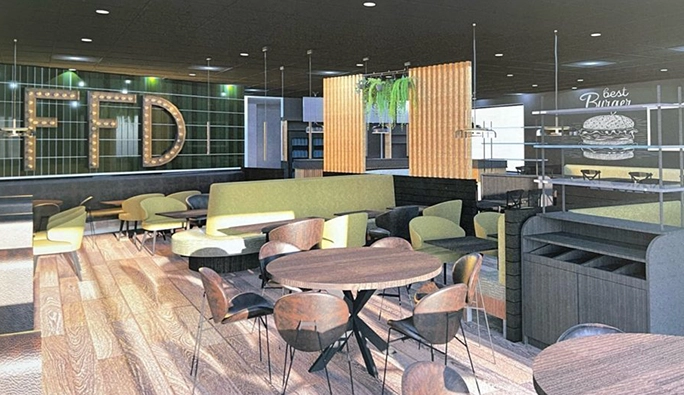

Une première dans le Bassin Minier...Un bâtiment entièrement dédié à la restauration....avec terrasse et rooftop... inspiré des lieux visités a Paris, Rotterdam ou encore Bruxelles...Une offre de restauration différente, innovante...ouverts à tous ceux ayant un projet de création ou de développement de leur concept...Bornes digitales, programmation événementielle...ce nouveau concept fera tout pour vous offrir un service innovant.

"Le concept est simple : c'est un espace restauration entouré de différents stands autour de la cuisine, comme plusieurs food truck par exemple, explique Laurent Duporge, le Maire.
Ce qui est fou, c'est que les promoteurs voulaient absolument venir chez nous, alors qu'ils sont plutôt habitués à développer ce type d'enseigne à Bruxelles, Lille ou Paris".
Sur plus de 1000m2 dédiés à la restauration, nous y trouverons des stands de cuisine, un bar, des restaurants...et même un rooftop : un toit ouvert à la clientèle.